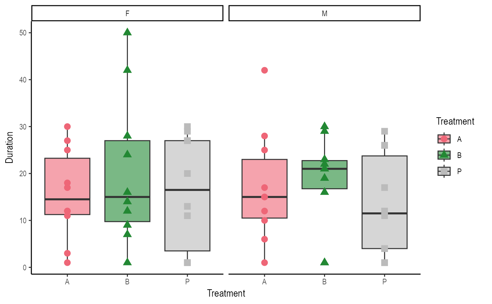

grafify internally includes colour-blind compatible schemes for fill and colour/color aesthetics.
Note that these only work for categorical variables. Use the brewer or viridis packages for numeric gradient scales.
scale_colour_grafify(palette = "all_grafify", reverse = FALSE, ...)
Arguments
| palette | Name of the colour scheme. Default set to |
|---|---|
| reverse | Whether the colour order should be reversed. |
| ... | Additional parameters for |
Value
ggplot scale_fill function
Details
The default for scale_fill_grafify(), scale_colour_grafify() or scale_color_grafify() is a list of 55 colours as part of palette = "all_grafify".
Obviously, it is not recommended to use so many colours, but implementing this was easiest to prevent errors when using a lot of categorical variables.
There are eight palettes with 5-10 colours each, which are recommended. These can be called by naming the colour scheme using palette = argument.
Additional options include "okabe_ito", "vibrant, "bright", "pale", "muted", "dark", "light", and "contrast". These are taken from Paul Taul, Mike Mol and Okabe Ito.
scale_fill_grafify2 and scale_colour_grafify2 are identical except that when the number of categorical variables is fewer than the total number of colour shades in the palette (e.g. if you have 3 groups and the "okabe_ito" palette has 7 colours), these functions will pick the most 'distant' colours from the scheme than going sequentially. If you want colours assigned sequencially do not use scale_fill_grafify or scale_colour_grafify.
Examples
#add a colour scheme to a ggplot object ggplot(neuralgia, aes(x = Treatment, y = Duration))+ geom_point(aes(colour = Sex), size = 3)+ scale_colour_grafify(palette = "muted")#reverse colour order ggplot(neuralgia, aes(x = Treatment, y = Duration))+ geom_point(aes(colour = Sex), size = 3)+ scale_colour_grafify(palette = "muted", reverse = TRUE)